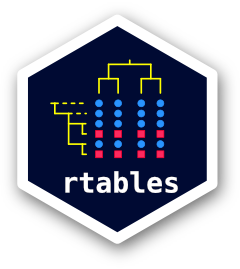

rtables 


Reporting tables with R
The rtables R package was designed to create and display complex tables with R. The cells in an rtable may contain any high-dimensional data structure which can then be displayed with cell-specific formatting instructions. Currently, rtables can be outputted in ascii html, and pdf, as well Power Point (via conversion to flextable objects). rtf support is in development and will be in a future release.
rtables is developed and copy written by F. Hoffmann-La Roche and it is released open source under Apache License Version 2.
rtables development is driven by the need to create regulatory ready tables for health authority review. Some of the key requirements for this undertaking are listed below:
- cell values and their visualization separate (i.e. no string based tables)
- values need to be programmatically accessible in their non-rounded state for cross-checking
- multiple values displayed within a cell
- flexible tabulation framework
- flexible formatting (cell spans, rounding, alignment, etc.)
- multiple output formats (html, ascii, latex, pdf, xml)
- flexible pagination in both horizontal and vertical directions
- distinguish between name and label in the data structure to work with
CDISCstandards - title, footnotes, cell cell/row/column references
rtables currently covers virtually all of these requirements, and further advances remain under active development.
Installation
rtables is available on CRAN and you can install the latest released version with:
install.packages("rtables")or you can install the latest development version directly from GitHub with:
remotes::install_github("insightsengineering/formatters")
remotes::install_github("insightsengineering/rtables")Note you might need to set your GITHUB_PAT environment variable in order to be able to install from GitHub.
Packaged releases (both those on CRAN and those between official CRAN releases) can be found in the releases list.
Usage
We first demonstrate with a demographic table-like example and then show the creation of a more complex table.
library(rtables)
lyt <- basic_table() %>%
split_cols_by("ARM") %>%
analyze(c("AGE", "BMRKR1", "BMRKR2"), function(x, ...) {
if (is.numeric(x)) {
in_rows(
"Mean (sd)" = c(mean(x), sd(x)),
"Median" = median(x),
"Min - Max" = range(x),
.formats = c("xx.xx (xx.xx)", "xx.xx", "xx.xx - xx.xx")
)
} else if (is.factor(x) || is.character(x)) {
in_rows(.list = list_wrap_x(table)(x))
} else {
stop("type not supported")
}
})
build_table(lyt, ex_adsl)
#> A: Drug X B: Placebo C: Combination
#> ————————————————————————————————————————————————————————————
#> AGE
#> Mean (sd) 33.77 (6.55) 35.43 (7.90) 35.43 (7.72)
#> Median 33.00 35.00 35.00
#> Min - Max 21.00 - 50.00 21.00 - 62.00 20.00 - 69.00
#> BMRKR1
#> Mean (sd) 5.97 (3.55) 5.70 (3.31) 5.62 (3.49)
#> Median 5.39 4.81 4.61
#> Min - Max 0.41 - 17.67 0.65 - 14.24 0.17 - 21.39
#> BMRKR2
#> LOW 50 45 40
#> MEDIUM 37 56 42
#> HIGH 47 33 50
library(rtables)
library(dplyr)
## for simplicity grab non-sparse subset
ADSL <- ex_adsl %>% filter(RACE %in% levels(RACE)[1:3])
biomarker_ave <- function(x, ...) {
val <- if(length(x) > 0) round(mean(x), 2) else "no data"
in_rows(
"Biomarker 1 (mean)" = rcell(val)
)
}
basic_table(show_colcounts = TRUE) %>%
split_cols_by("ARM") %>%
split_cols_by("BMRKR2") %>%
split_rows_by("RACE", split_fun = trim_levels_in_group("SEX")) %>%
split_rows_by("SEX") %>%
summarize_row_groups() %>%
analyze("BMRKR1", biomarker_ave) %>%
build_table(ADSL)
#> A: Drug X B: Placebo C: Combination
#> LOW MEDIUM HIGH LOW MEDIUM HIGH LOW MEDIUM HIGH
#> (N=45) (N=35) (N=46) (N=42) (N=48) (N=31) (N=40) (N=39) (N=47)
#> ————————————————————————————————————————————————————————————————————————————————————————————————————————————————————————————————————————————
#> ASIAN
#> F 13 (28.9%) 9 (25.7%) 19 (41.3%) 9 (21.4%) 18 (37.5%) 9 (29.0%) 13 (32.5%) 9 (23.1%) 17 (36.2%)
#> Biomarker 1 (mean) 5.23 6.17 5.38 5.64 5.55 4.33 5.46 5.48 5.19
#> M 8 (17.8%) 7 (20.0%) 10 (21.7%) 12 (28.6%) 10 (20.8%) 8 (25.8%) 5 (12.5%) 11 (28.2%) 16 (34.0%)
#> Biomarker 1 (mean) 6.77 6.06 5.54 4.9 4.98 6.81 6.53 5.47 4.98
#> U 1 (2.2%) 1 (2.9%) 0 (0.0%) 0 (0.0%) 0 (0.0%) 1 (3.2%) 0 (0.0%) 1 (2.6%) 1 (2.1%)
#> Biomarker 1 (mean) 4.68 7.7 no data no data no data 6.97 no data 11.93 9.01
#> BLACK OR AFRICAN AMERICAN
#> F 6 (13.3%) 3 (8.6%) 9 (19.6%) 6 (14.3%) 8 (16.7%) 2 (6.5%) 7 (17.5%) 4 (10.3%) 3 (6.4%)
#> Biomarker 1 (mean) 5.01 7.2 6.79 6.15 5.26 8.57 5.72 5.76 4.58
#> M 5 (11.1%) 5 (14.3%) 2 (4.3%) 3 (7.1%) 5 (10.4%) 4 (12.9%) 4 (10.0%) 5 (12.8%) 5 (10.6%)
#> Biomarker 1 (mean) 6.92 5.82 11.66 4.46 6.14 8.47 6.16 5.25 4.83
#> U 0 (0.0%) 0 (0.0%) 0 (0.0%) 0 (0.0%) 0 (0.0%) 0 (0.0%) 1 (2.5%) 1 (2.6%) 0 (0.0%)
#> Biomarker 1 (mean) no data no data no data no data no data no data 2.79 9.82 no data
#> UNDIFFERENTIATED 1 (2.2%) 0 (0.0%) 0 (0.0%) 0 (0.0%) 0 (0.0%) 0 (0.0%) 2 (5.0%) 0 (0.0%) 0 (0.0%)
#> Biomarker 1 (mean) 9.48 no data no data no data no data no data 6.46 no data no data
#> WHITE
#> F 6 (13.3%) 7 (20.0%) 4 (8.7%) 5 (11.9%) 6 (12.5%) 6 (19.4%) 6 (15.0%) 3 (7.7%) 2 (4.3%)
#> Biomarker 1 (mean) 4.43 7.83 4.52 6.42 5.07 7.83 6.71 5.87 10.7
#> M 4 (8.9%) 3 (8.6%) 2 (4.3%) 6 (14.3%) 1 (2.1%) 1 (3.2%) 2 (5.0%) 5 (12.8%) 3 (6.4%)
#> Biomarker 1 (mean) 5.81 7.23 1.39 4.72 4.58 12.87 2.3 5.1 5.98
#> U 1 (2.2%) 0 (0.0%) 0 (0.0%) 1 (2.4%) 0 (0.0%) 0 (0.0%) 0 (0.0%) 0 (0.0%) 0 (0.0%)
#> Biomarker 1 (mean) 3.94 no data no data 3.77 no data no data no data no data no dataAcknowledgments
We would like to thank everyone who has made rtables a better project by providing feedback and improving examples & vignettes. The following list of contributors is alphabetical:
Maximo Carreras, Francois Collins, Saibah Chohan, Tadeusz Lewandowski, Nick Paszty, Nina Qi, Jana Stoilova, Heng Wang, Godwin Yung
Presentations
Advanced rtables Training
- Part 1 Slides
- Part 2 - Forthcoming
R Adoption Series
- R Adoption Series presentation 2022
- Slides: https://github.com/gmbecker/rtables_radoption_webinar (index.html)